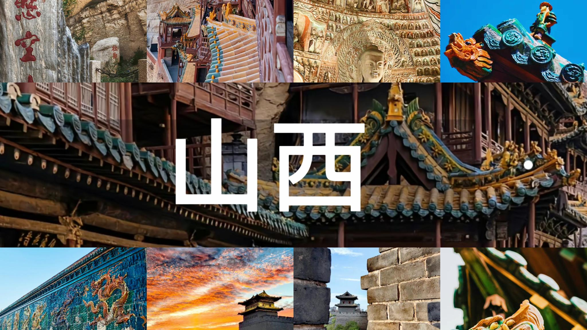
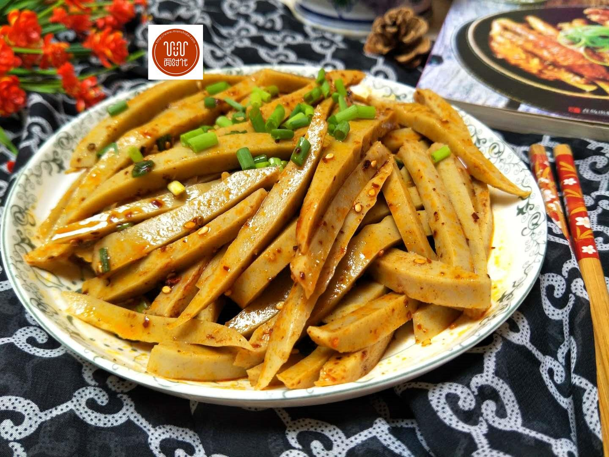
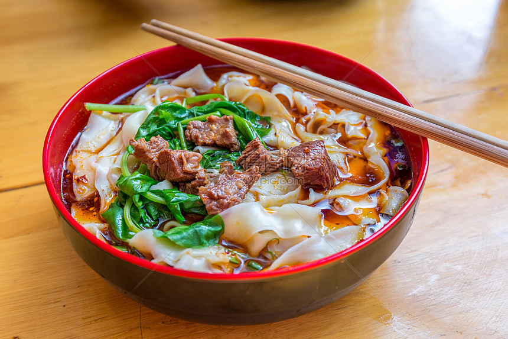
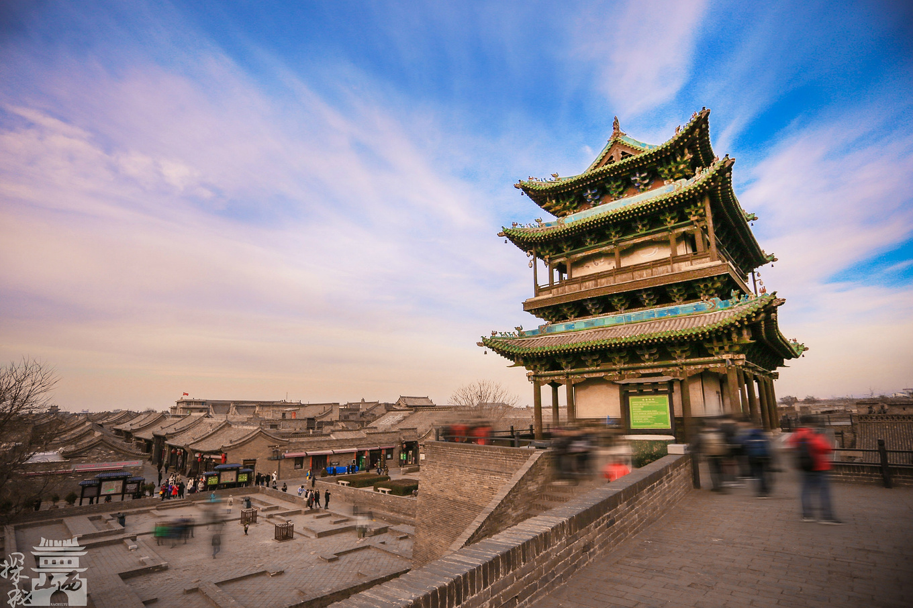
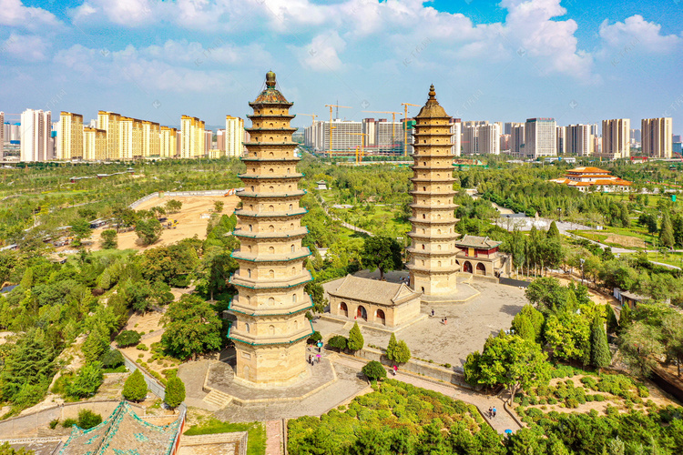
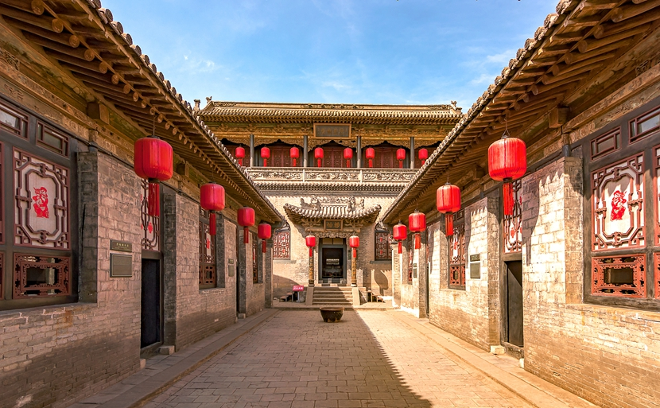

我的家乡·山西·晋

山西省，简称“晋”，省会太原市，地处黄河流域中部。 山西是中华民族的发祥地之一，是戏剧文化的发祥地、长城文化的核心区和集大成之地、 石器文化的集中区、佛教文化的首善区、古木建筑的博物馆，有文字记载的历史达三千年。 山西是革命老区，也是红色文化资源的重要聚集地。 煤、焦、冶、电是山西四大传统支柱产业。 山西省重点培育特钢材料、新能源汽车、高端装备制造、风电装备、氢能、铝镁精深加工、光伏、 现代医药、第三代半导体、合成生物十大产业链。山西是中华民族发祥地之一， 山西有文字记载的历史达三千年，被誉为“华夏文明摇篮”， 素有“中国古代文化博物馆”之称。总面积15.67 万平方公里，东有太行山，西有吕梁山， 山区面积约占全省总面积的80%以上。
家乡美食


家乡美景


